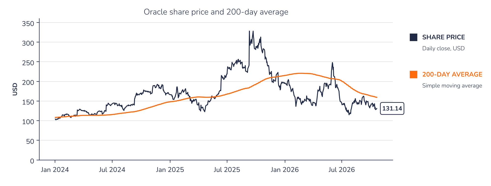
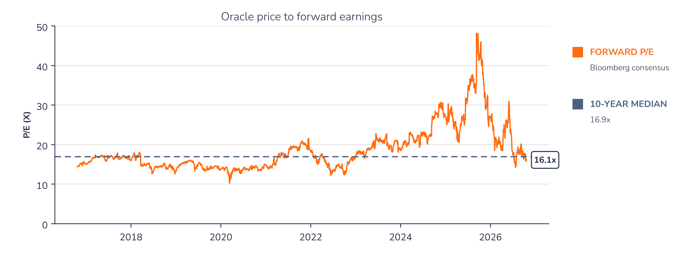

Chart 1 · ORCL: the share has given back its 2025 rally
Daily closing price and 200-day moving average since January 2024, in USD

Source: Syz Research, Bloomberg
Chart 2 · ORCL: the earnings multiple is back near its 10-year median
Share price divided by Bloomberg consensus forward earnings per share, over ten years

Source: Syz Research, Bloomberg
Key data
| Market data | Value |
|---|---|
| Latest price | USD 131.14 |
| 1-year change | -52.06% |
| 52-week range | USD 114.99 to 283.33 |
| Beta | 1.72 |
| Market cap. (USD m) | 396,533 |
| 5-day average volume | 34,101,120 |
| ISIN | US68389X1054 |
| Valuation and returns | Value |
|---|---|
| P/Book FY1 | 4.7x |
| EV/EBITDA FY1 | 10.3x |
| Operating margin | 33.32% |
| ROIC | 10.73% |
| FCF yield FY1 | -9.4% |
| Dividend yield FY1 | 1.5% |
Source: Syz Research, Bloomberg. Data as of the close on 20 October 2026.